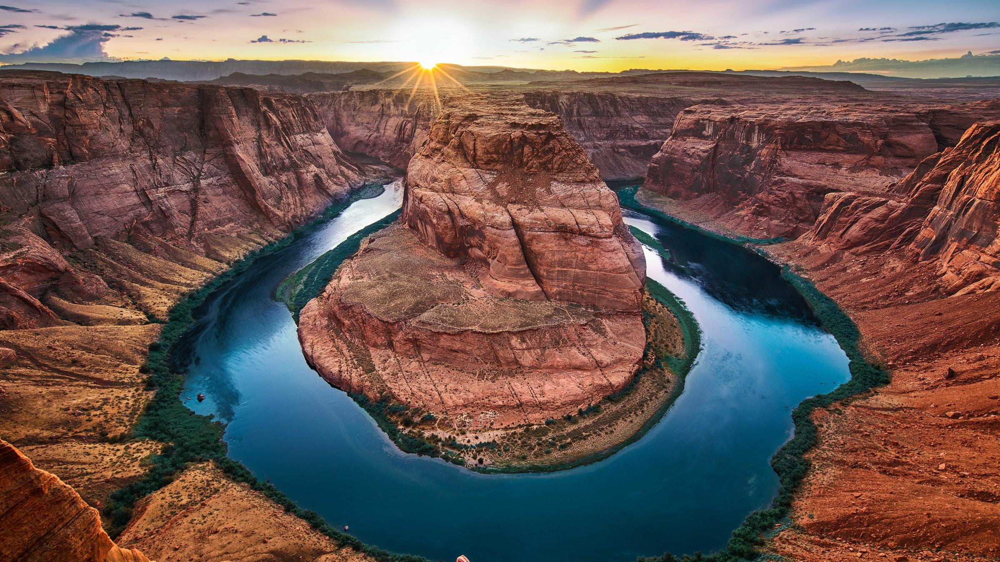
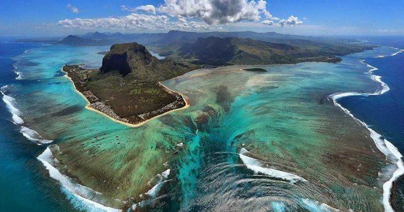

Уникальные места
- Солончак Уюни (Боливия). Солёное озеро на высоте 3650 м над уровнем моря. Во время сезона дождей оно превращается в самое большое зеркало в мире.

- Бухта Халонг (Вьетнам). В заливе расположено около 3000 островов, скал, утёсов и пещер.

- Мёртвое море (Израиль). Из-за высокого содержания соли в нём нельзя утонуть, а грязь со дна моря — лечебная.

- Пещеры Вайтомо (Новая Зеландия). Светлячки, обитающие здесь, создают фантастический эффект звёздного неба.

- Шоколадные холмы (Филиппины). На острове Бохоль расположено 1268 холмов конической формы. В сухой сезон трава на их поверхности приобретает ярко-коричневый цвет, напоминающий шоколад.

- Озеро Морейн (Канада). Горное озеро находится на высоте почти двух тысяч метров над уровнем моря. Водоём подпитывают тающие ледники, поэтому вода здесь кристально чистая, удивительного бирюзового цвета.
- Гранд-Каньон в Аризоне — уникальное геологическое образование, высеченное рекой Колорадо, с величественными стенками глубиной до 1,6 км. Его красивые цветовые оттенки поражают посетителей.
- Гора Фудзи — высшая точка Японии (3 776 м) и символ страны. Её конусообразная форма и снежная шапка делают её популярной среди туристов.
- Мадагаскар — четвёртый по размеру остров с уникальным биоразнообразием, где 90% видов флоры и фауны не встречаются нигде более. Остров сочетает различные экосистемы и богатую культуру.
